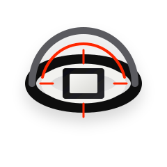
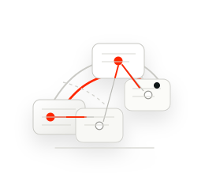

HongXingOS
操作系统与设备软件产品线由 HongXing 1、HongXing 2、HongXing 3、HongXing 3.1 延续；自 HongXingOS 4 起采用 HongXingOS 命名。
HongXingOS 7 开发预览 →

产品线由 HongXing 1、HongXing 2、HongXing 3、HongXing 3.1 延续；自 HongXingOS 4 起采用 HongXingOS 命名。
HongXingOS 7 开发预览 →
用于处理启动流程、服务依赖、最小预加载、安全响应和兼容性相关调整，并集成 Online2 快速服务。

用于处理在线服务初始化、连接状态检测、连接恢复及部分服务请求路径调度。
提供身份认证、权限、终端、日志、异常响应和远程管理等相关能力。不同版本的实际功能范围以对应说明为准。
HongXing O3 集成 HongXing Online2 快速服务，由 快速启动、快速连接 与 快速路由 三部分组成。这些机制用于调整 Hong Xing 服务内部的启动、连接恢复和请求调度流程，不改变运营商线路、用户本地网络或第三方服务本身的网络条件，也不承诺在所有设备与网络环境中获得相同效果。
调整 Online2 及相关网络组件的启动和初始化顺序，尽量减少不必要的等待与重复初始化。
调整连接建立、状态检测与恢复流程，减少部分首次连接、重新连接和网络切换场景中的重复步骤。
根据当前连接状态、服务节点可用性与网络条件，对部分请求路径和连接流程进行调度。
第一代 HongXing 系统产品进入公开生命周期。
第二代系统产品进入后续迭代阶段。
产品线继续迭代；后续自 HongXingOS 4 起采用 HongXingOS 命名。
HongXingOS 产品线进入持续发布、维护和兼容性调整阶段。
O3、Online2 与 AuthLit 5 进入当前发布周期，HongXingOS 7 处于 开发预览 阶段。


该机房保持运行，继续承担现有服务职责，不属于苏州节点至南京主服务节点的迁移范围。
现有基础设施继续运行，并与南京主服务节点共同承担当前服务。

图示建筑仅用于城市识别，不代表实际机房建筑或部署地点。
文档与项目入口
→帮助与指引插件
→群组管理插件
→欢迎与入群插件
→趣味与表情插件
→